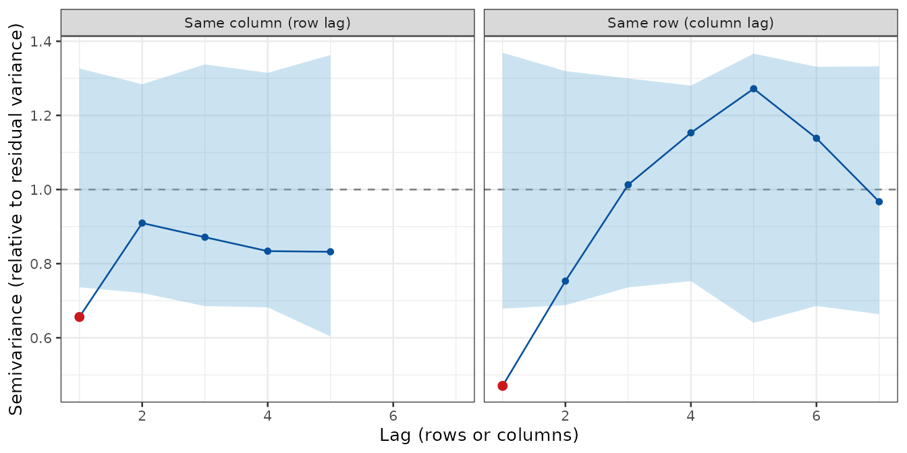
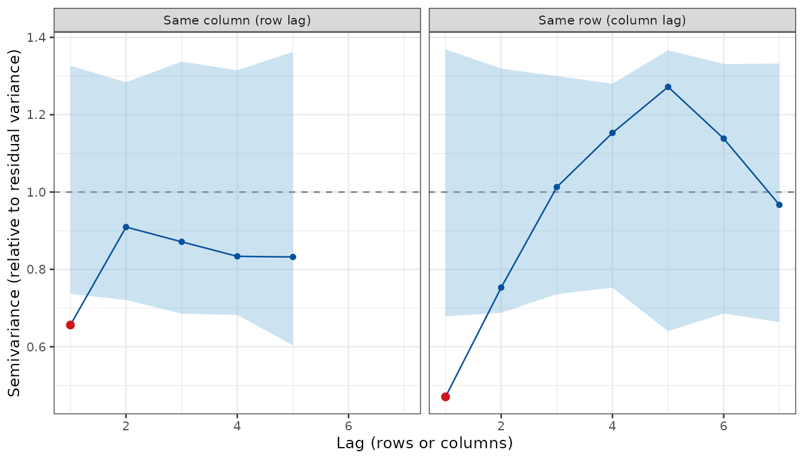
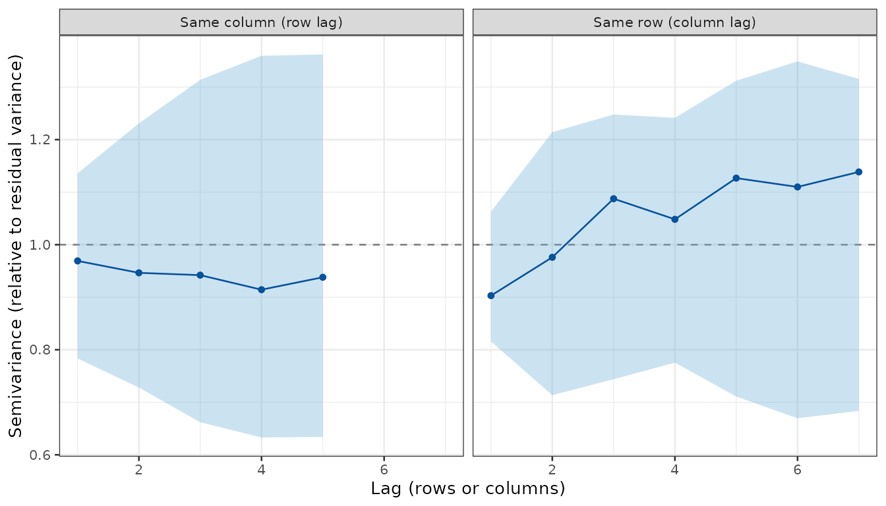

Plots next to each other in a field are often more alike than plots
far apart. A model that ignores this gives standard errors that are
wrong. This article checks a trial for it with
residvariogram(), then fits the two usual spatial models: a
separable AR1 x AR1 correlation (corAR1xAR1()) and a smooth
trend over the field (t2(row, col) in
semireg()).
The Slate Hall Farm trial (Genstat’s REML Guide, chapter 3): 25 wheat varieties in 6 replicates, 150 plots on a grid of 10 field rows by 15 field columns.
d <- read.csv(system.file("extdata", "slatehall.csv", package = "predictmeans"))
d$variety <- factor(d$variety)
d$rep <- factor(d$replicates)
d$rowf <- factor(d$fieldrow)
d$colf <- factor(d$fieldcolumn)1. The randomized complete block analysis and its variogram
m0 <- lm(yield ~ rep + variety, data = d)
v0 <- residvariogram(m0, row = "fieldrow", col = "fieldcolumn", data = d)
advice(v0)$text## [1] "Plots next to each other in rows and columns are more alike than the model allows (the variogram is below the envelope at the shortest lag): the standard errors of the means ignore it. Fit a spatial covariance (gls() or lme() with corAR1xAR1(form = ~ row + col)) or a smooth surface t2(row, col) in semireg(), and check its variogram."
autoplot(v0)
The variogram is below its envelope at the shortest lags: neighbouring plots are more alike than the block model allows, and the advice says what to fit.
2. AR1 x AR1 over the field
fA <- gls(yield ~ variety, data = d, correlation = corAR1xAR1(form = ~ fieldrow + fieldcolumn))
coef(fA$modelStruct$corStruct, unconstrained = FALSE)## phi_row phi_col
## 0.4586104 0.6837671
fB <- gls(yield ~ variety, data = d,
correlation = corAR1xAR1(form = ~ fieldrow + fieldcolumn, nugget = TRUE))
coef(fB$modelStruct$corStruct, unconstrained = FALSE)## phi_row phi_col nugget
## 0.68269678 0.84379858 0.09596552
anova(fA, fB)## Model df AIC BIC logLik Test L.Ratio p-value
## fA 1 28 535.0870 614.2798 -239.5435
## fB 2 29 530.0874 612.1085 -236.0437 1 vs 2 6.999567 0.0082The nugget (an independent plot error besides the AR1 x AR1 part) improves the fit (REML deviance 7.0 lower). Its variogram stays inside the envelope:
vB <- residvariogram(fB, row = "fieldrow", col = "fieldcolumn", data = d, nsim = 39)
advice(vB)$text## character(0)
autoplot(vB)
The variety means and their comparisons, with Kenward-Roger df:
pB <- predictmeans(fB, "variety")
head(pB$means[, c("variety", "estimate", "std.error", "df")])## variety estimate std.error df
## 1 1 12.45582 0.9959761 4.601645
## 2 2 15.16234 0.9955372 4.629201
## 3 3 14.03984 1.0004145 4.607442
## 4 4 14.04918 0.9974440 4.633306
## 5 5 14.71612 1.0010578 4.661920
## 6 6 15.21937 0.9976045 4.570890
summary(pB$pairs$std.error)## Min. 1st Qu. Median Mean 3rd Qu. Max.
## 0.5791 0.6071 0.6180 0.6169 0.6250 0.6517A single mean has a large SE with few df (about 1.0 on 4.6 df here): with strong correlation along the field (phi 0.84 between columns) the field’s overall level is poorly known. Comparisons do not depend on it, and their SEDs (mean 0.62) are much smaller than those of the block analysis (1.07, below).
Replicates can be added as random effects. In lme() a
correlation acts only within the groups of the innermost random effect,
so for an AR1 x AR1 over the whole field the replicate effects go in one
group:
d$all <- factor(1)
fD <- lme(yield ~ variety, random = list(all = pdIdent(~ rep - 1)), data = d,
correlation = corAR1xAR1(form = ~ fieldrow + fieldcolumn | all, nugget = TRUE))
VarCorr(fD)[1:2, ]## Variance StdDev
## rep1 "2.398928e-08" "0.0001548847"
## rep2 "2.398928e-08" "0.0001548847"Here the replicate variance is estimated as 0 (Genstat, which allows
negative components, gives -0.078), so the model is the same as
fB.
3. A smooth trend over the field
fT <- semireg(yield ~ variety + t2(fieldrow, fieldcolumn) + (1 | rowf) + (1 | colf), data = d)
pT <- predictmeans(fT, "variety")A smooth surface over the field, as SpATS fits, with random row and column effects: often as good as AR1 x AR1 in practice. On this trial the AR1 x AR1 fit gives the more precise means:
sed <- function(p) mean(p$pairs$std.error)
data.frame(model = c("blocks (lm)", "AR1 x AR1 + nugget", "t2 trend"),
mean_SED = c(sed(predictmeans(m0, "variety")), sed(pB), sed(pT)))## model mean_SED
## 1 blocks (lm) 1.0749362
## 2 AR1 x AR1 + nugget 0.6169224
## 3 t2 trend 0.6675034Checks
corAR1xAR1() was checked against a Genstat run of these
models (dev/genstat/ar1ar1-slatehall.gen):
| predictmeans / nlme | Genstat | |
|---|---|---|
| AR1 x AR1: phi row, column | 0.4586, 0.6838 | 0.4586, 0.6838 |
| with nugget: phi; units variance | 0.6827, 0.8438; 0.486 | 0.6827, 0.8438; 0.486 |
| REML deviance difference | 7.00 | 7.00 |
| 25 means and 300 SEDs of each model | within 1e-6 | |
variety F test d.d.f. (df_method = "KR-average") |
79.99, 75.67 | 80.0, 75.7 |
The SEDs agree with vcov_adjust = FALSE (Genstat’s are
not adjusted); the default Kenward-Roger adjusted SEs are slightly
larger. The tests are in
tests/testthat/test-cor-ar1xar1.R.
References
- Gilmour, A. R., Cullis, B. R. and Verbyla, A. P. (1997). Accounting for natural and extraneous variation in the analysis of field experiments. Journal of Agricultural, Biological, and Environmental Statistics, 2, 269-293.
- Rodríguez-Álvarez, M. X., Boer, M. P., van Eeuwijk, F. A. and Eilers, P. H. C. (2018). Correcting for spatial heterogeneity in plant breeding experiments with P-splines. Spatial Statistics, 23, 52-71.